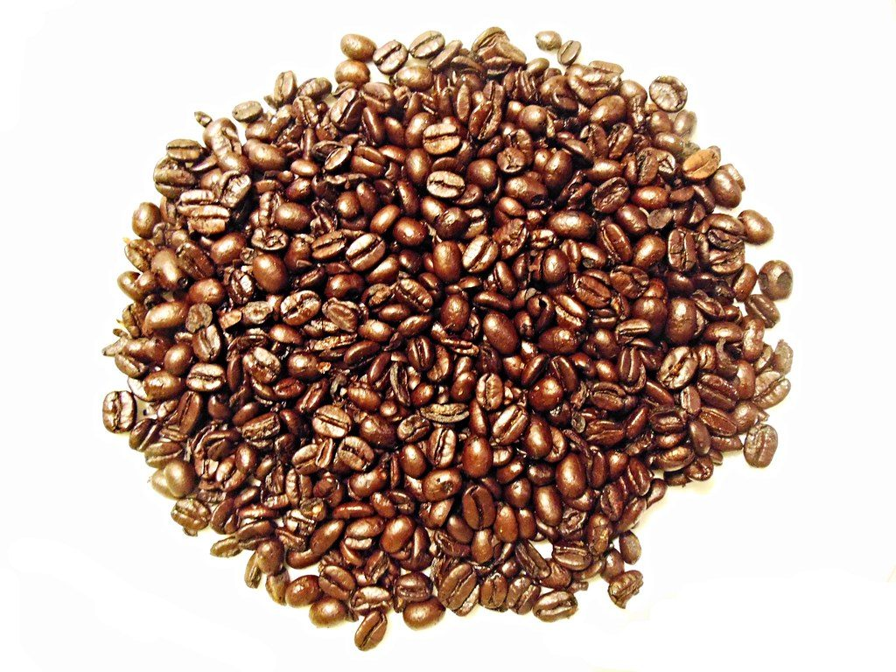

部位6〜8 底面
店のこと
お店について確認できているのは、所在地・電話番号・Instagramのアカウントだけです。
図2 底面図
確認できていること
- 店名は「木村パン」、業種はパン(ベーカリー)
- 所在地は熊本県天草市佐伊津町５６５６(〒863-2171)
- 電話番号は0969-23-6011
- 営業時間・定休日・メニュー・価格・ご予約・駐車場は準備中
- センサー所在地の確認
- 電源スイッチ営業時間は準備中
- 電池ふた定休日は準備中
イメージ
パンとコーヒー豆の写真
制作側が選んだフリー素材のイメージです。お店の商品・店内ではありません。
